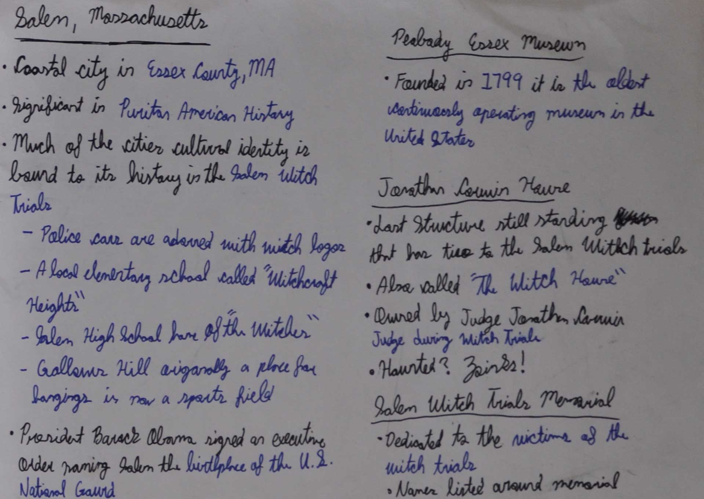
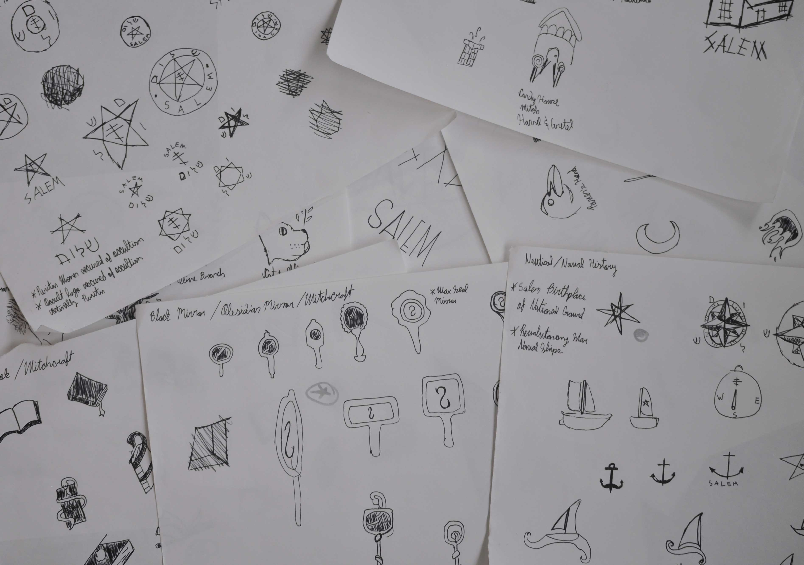
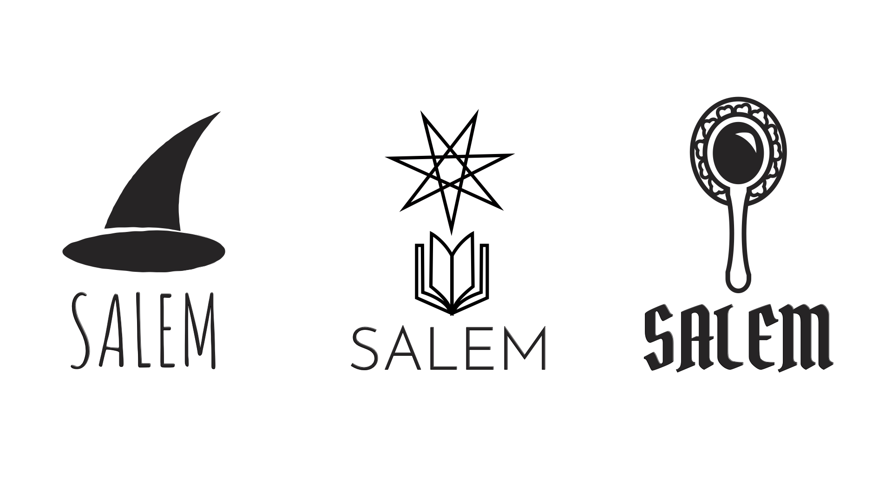

Salem City Logo Redesign

Research
To design a City Logo for Salem, MA I had to begin research. Understanding the history and culture of the City is needed in order to gather ideas for the logo as well as accurately potraying Salem.

Sketching
After gathering sufficent information on the history and culture of the City of Salem I began the sketching phase. Through my research I found that along with a strong history related to the Salem Witch Trials the city also had a long naval history.

Drafts
After choosing my strongest sketches I moved on to illustrator to see which logo would be best. The left most logo is of a witch hat as well as a sail boat, the middle logo is a "spell book" and a "north star", the last is a handheld mirror in reference to witchcraft.
Final
The final design was the middle choice that was in reference to the nautical and witch history of the city. The "north star" above the "spell book" represents the hope of Salem to move on from its dark and awful history.